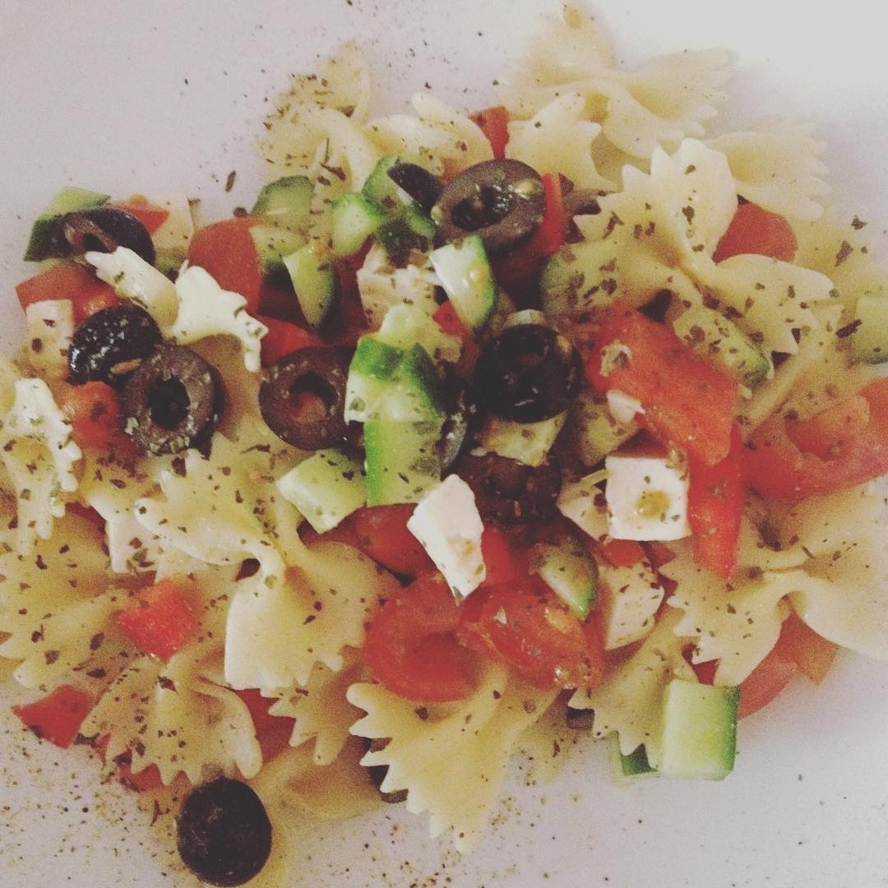

Vegetariánsky šalát podľa @receptyacit — Normy Jedál
Salát: těstoviny @panzani_czsk, bio cherry rajčata z @billa_cz , bio salátová okurka také z @billa_cz , červená paprika z @billa_cz , černé olivy, balkánský sýr, lžička olivového oleje, lžička vinného octa, pepř, trochu soli a bazalka. #receptacit #receptyacit #receptyacitblog #salat#idealnivere#milujusalaty#testovinovysalat#vegetarianskysalat#mnam#zdravejidlo#food#foodporn#foodphotography#pastasalad#inspiredbyjamieoliver#ilovemyfood#amazingdinner#vegetarian#yummyfood